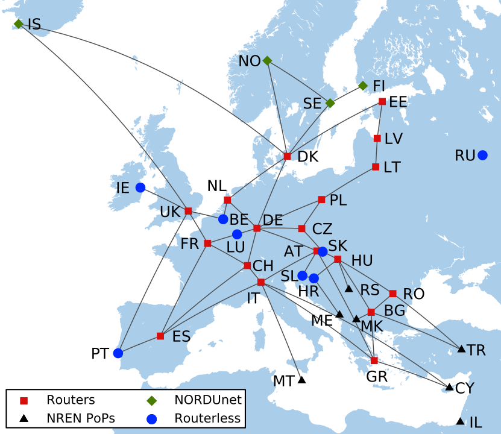

Abstract
This paper presents a realistic model of G테NT, the European Research and Education Network, including its participant national networks. Realistic network models have an important role in network research, however their measurement from actual networks is error-prone, and algorithmic generation remains an ongoing research area.
In previous work we built a global collection of networks, using topology maps and supporting documents provided publicly by network operators. This approach allows us to include hard-to-measure information such as type and location of nodes, link speeds, and critically, external network connections. In this paper we examine using this information to connect the networks in our collection and form a small Internet, and apply it to create an 1,100 node model of G테NT.
We have extended AutoNetkit – an automated configuration generator – to create the configurations needed to emulate this small Internet using virtual routers on a commodity PC. Emulation is a powerful tool for education and research in networking – allowing flexible networking tests at scale on an affordable budget – however, despite the ability to test large networks using emulation, there are few available as inputs. Our work provides such an input. Our emulation includes simple Quagga routing protocol configuration and DNS name resolution, and provides a starting point for complex network experiments.
One of the key tasks performed in evaluation of a new network protocol is to test it. There are various ways to do so, but it is common that the test must be made in a realistic setting. Many protocols may perform unreasonably poorly, or well, in particular cases, but it is more important to understand how they might perform in practice.
To this end, it is common to analyse a protocol, or simulate it on a particular network. More recently, emulation has become popular due to the increased ability to run multiple fully-functional virtual routers on a single computer. Emulation is more realistic than a typical simulation because the routers have many of the limitations of a hardware device (for instance, software bugs are replicated), but without the cost and inflexibility of real hardware. Examples of emulation toolkits include NetKit [1], JuniperCloud [2], and DynaMIPs [3, 4]. Between these tools, they allow emulation of Cisco and Juniper routers, among others.
Emulation’s advantage over simulation is an increase in realism, but it is not as realistic as hardware. For instance, accurate timing of events is difficult to achieve in a virtual environment, as is high throughput of data traffic. Hardware achieves these features, but the major difficulty with hardware testbeds is their cost. The cost of routers means that few testbeds have more than a dozen routers, and even these have a limited range of routers from any one vendor. So emulation allows us to perform experiments at much larger scale than is achievable in hardware.

However, there are several roadblocks in the way of achieving realistic, large-scale emulation. The foremost is simply the lack of realistic large-scale models on which to base the emulation. Measurement-based models of networks have often been found to be inaccurate, or to lack crucial information (such as link capacities) [7, 8], and the research community is still arguing about the best way to produce synthetic network models that are realistic [9, 10].
An alternative approach is to use real networks as exemplars. In the Internet Topology Zoo [11] we have transcribed a set of such networks, and made them available for use in simulation, emulation, or analysis. However, the networks in the Zoo are presented as individual networks. We do have information about the way they connect though, and in this paper we exploit this information to create a realistic “network of networks” model.
The model we present is based on G테NT — the European Backbone Research Network — and its associate European NRENs (National Research and Education Networks). We focus on these networks because they form a meaningful subsection of the whole Internet; they have interesting variety and structure; and because these networks’ operators provide, typically, a high-quality information about both their network structure, and in some cases even the design criteria for the network. For instance, Figure 1 shows the high-level structure of G테NT based on the information provided in [5, 6]. The resulting system comprises more than 40 component networks and over 1000 routers. This is as large, or larger than, many emulation toolkits are capable of supporting on standard hardware.
The model supports a number of features such as automatically configured DNS names and simple routing protocols so that it can serve as a fully functioning skeleton on which to place additional details of, for instance, policy based routing.
The model provides router-level connectivity of the multiple Autonomous Systems that make up the European Research Networks, but the model is just that. It is not G테NT. We created the model by combining the information about neighbours provided publicly by G테NT and the NRENs, and transcribed into the Zoo. However, the problems in doing so are not trivial. The publicly available information is not complete, sometimes ambiguous, and often involves translations of different networking conventions into a common framework. For instance, the different NRENs do not even have a common definition of a Point of Presence (PoP). In putting the network into such a common framework we have made approximations, and in a small set of cases we have had to fill in gaps where information was missing. In these cases have supplemented public information with measurements in to improve the quality of the results, but there is no doubt that the model varies from the real European Research Network for some details.
The model is also just one case. One subset of the whole Internet, which has many thousands of component networks. We cannot assert that it is representative of the whole Internet, and so any realistic testing should involve more than just this one case. However, we must start somewhere.
Other work has looked at modeling networks. Quoitin et al [12] use cBGP to simulate routing protocol behaviour, in the G테NT network. Their network model was derived through access to G테NT routing information. Liljenstam et al [13] present a model of the Internet Backbone topology, using information from traceroute studies. The model presented in this paper has been obtained from publicly available data sources.
The model from this paper is provided at www.topology-zoo.org/eu_nren.html in a variety of forms. The precise description of the networks and their interconnects is given in the form of GML (Graph Markup Language) [14], which is easily machine readable and translatable, and suitable for input into a simulation or analysis toolkit. We also use AutoNetKit [15] to translate the GML into a specific configuration for NetKit [1] an emulation toolkit. In doing so, however, we note that each router in NetKit requires approximately 32 MB of RAM. The 1000+ node full model therefore requires more RAM than most typical systems. NetKit allows large networks to be split across multiple connected machines, however, to make the model more accessible to users with small machines we have also created cut down emulation models that require memory that is typical of commodity PCs today.
The primary source of data used to create this model is network maps, and other descriptive documents provided by the operators of G테NT and the European NRENs themselves.
The data was collected into the Internet Topology Zoo [11] www.topology-zoo.org in previous work. The Internet Topology Zoo is a collection of networks, derived from publicly available records, stripped down to a clearly labelled graph form and stored with all of its associated metadata in an on-line repository. It is a collection of networks of different purposes, research and/or commercial, and different types, with small local scale and large continental range. In this collection we have a large amount of information on G테NT and its component networks, which we use to extract the data that we will use in the rest of this paper. The data in the Zoo is in the form of individual networks, however, the information provided by many network operators includes data on their interconnects with other networks. In this project, we stitched together a group of more than 40 such networks to create a model of the type of interconnected network of networks that comprises the Internet.
The advantage of the Zoo data, as compared to typical measurement studies lies in its relative accuracy, which derives from the fact that the data is provided by the network operator, rather than inferred, and the fact that the data provided by operators contains much meta data information of use in creating a realistic emulation. For instance, the data contains geographic locations (which we have geocoded [16] to latitude and longitude with an approximate accuracy of a metropolitan area) and link capacities.
The data is not complete, and so we have supplemented it by directed traceroutes to ascertain additional details (for instance the location of interconnects). In using these traceroutes to find specific information, we avoid some of the common pitfalls in such measurements. For instance, we do not need to resolve the aliasing problem as we do not need to mesh a set of traceroutes into a full network; and we are not as concerned about missing links because we are using traceroute to resolve the location of links that we know are present. There is still the possibility that some links are missed because neither G테NT, or any NREN, report them. We also examine the results manually to check them, rather than automatically compiling them through some inference process.
Also, not all network topology maps provide the full location name of each node. Many use abbreviated node names, or names in local languages. For these we refer to supplementary information, such as annual reports or PoP listings on operator websites, and make use of alternate place names in Geonames. We also use routing-registry data, and reverse DNS to help resolve ambiguities, but again we do it in a targeted manner (described later in the paper), and manually parse the results. We also verify network co-ordinates by plotting the network maps and inspecting them.
One final issue is that the network maps and data provided by operators are not all contemporaneous. Table 1 documents the dates of each part of the network. This presents the problem that they may be “out of sync” in the sense that one network may report a recent interconnect that another network has not. We found little evidence for this type of error in the data, but there certainly are some ambiguities in the interconnect data, and we shall describe how we resolve these in the following sections.
The choice of the European Research Network for this study is based on a number of features. Research and education networks are generally non-commercial in nature and, as a result, often less reticent about revealing data. In fact, these networks are often required to provide high-quality, detailed information about their networks — through published maps, annual reports, or at regional conferences — as a result of their funding models.
The non-commercial nature of research and education networks also means they don’t have to expand to meet a growing corporate or individual user clientele. They normally connect Universities, or other educational facilities, and these facilities do not come and go as quickly as businesses do, so NRENs tend to be more stable in their development and add and remove nodes slowly.
The set of networks is also well constrained so we can hope to model it all. The Autonomous System- or AS-level topology is simple, but not trivial, and the NRENs show a remarkable variety ranging from hub-spoke networks, to rings, to much meshier networks.
The starting point for the model was the individual networks in the Zoo, selected according to the G테NT network partner list [17] shown in Table 1. The most recent map for each was used, with dates given in the table. We were not able to find a network topology for JSSC, the Russian NREN, and the University of Malta, so we add a single node to our model for each of these.
For some networks we have multiple views, for instance, layer 1 and layer 3 maps. In these cases we primarily use the IP level maps, except where the layer 1 map helps resolve ambiguities in the higher level.
For each network, we derived a single ASN (Autonomous System Number) to use in the model for configuring inter-domain routing. Tables such as [18] provide a list of ASNs and their respective network operator. However, many network operators use more than one ASN, e.g., DFN, the German NREN, has AS680, AS1275, AS2123, and AS2124. Selection of a particular ASN for each NREN is non-trivial. Our approach was to select a particular IP address for each operator, usually something central such as their main web page. We check that the IP address so chosen is sensible using traceroute and reverse DNS lookups. We then use registry information to map the IP address to an ASN and cross-reference with [18]. The choice, made this way, may simplify the actual way inter-domain routing is used by the network operator to manage their own network, but at least it assures us the the ASN we choose is being used in the network in a non-trivial manner. The ASNs chosen for each NREN are shown in Table 1.
| Partner | NREN Location | ASN | Date |
| G테NT | Europe | 20965 | 2010-08 |
| ACOnet | Austria | 1853 | 2009-06 |
| AMRES | Serbia | 13092 | 2011-07 |
| ARNES | Slovenia | 2107 | 2010-10 |
| BELnet | Belgium | 2611 | 2010 |
| BREN | Bulgaria | 6802 | 2010-10 |
| CARNet | Croatia | 2108 | 2010-08 |
| CESNET | Czech Republic | 2852 | 2010-06 |
| CYNET | Cyprus | 3268 | 2011-01 |
| DFN | Germany | 680 | 2011-01 |
| EENet | Estonia | 3221 | 2009-06 |
| FCCN | Portugal | 1930 | 2011-03 |
| GARR | Italy | 137 | 2010-12 |
| GRNET | Greece | 5408 | 2010-10 |
| HEAnet | Ireland | 1213 | 2011-07 |
| IUCC | Israel | 378 | 2008 |
| JANET | United Kingdom | 786 | 2011-03 |
| LITNET | Lithuania | 2847 | 2009 |
| MARNet | Macedonia | 5379 | 2007 |
| MREN | Montenegro | 13092 | 2007 |
| NIIF | Hungary | 1955 | 2009-05 |
| PSNC | Poland | 9112 | 2011-07 |
| RENATER | France | 2200 | 2010-08 |
| RESTENA | Luxembourg | 2602 | 2011-03 |
| RedIris | Spain | 766 | 2011-03 |
| RoEduNet | Romania | 2614 | 2006 |
| SANET | Slovakia | 2607 | 2008 |
| SURFnet | Netherlands | 1103 | 2010-10 |
| SWITCH | Switzerland | 559 | 2011 |
| SigmaNet | Latvia | 5538 | 2007 |
| ULAKBIM | Turkey | 1967 | 2010-10 |
| Uni. of Malta | Malta | 12046 | NA |
| BASNET | Belarus | 21274 | 2008 |
| JSCC | Russia | 3058 | NA |
| RENAM | Moldova | 9199 | 2007 |
| URAN | Ukraine | 12687 | 2010-10 |
| FUNET | Finland | 8624 | 2010-10 |
| NORDUnet | Nordic region | 2603 | 2010-10 |
| RHnet | Iceland | 15474 | 2011-03 |
| SUNET | Sweden | 2603 | 2010-10 |
| Uni-C | Denmark | 1835 | 2010-10 |
| Uninett | Norway | 224 | 2011 |
There is no standard for network topology maps — the information provided differs between network operators. For instance, the definition of PoP varies between NRENS and G테NT. The latter divides it PoPs into two broad categories [6], those that contain a router and those that are “routerless”. The router containing PoPs in G테NT can be further grouped based on their connection method: Core PoPs that are on the G테NT Plus fibre service (AT, CH, CZ, DE, DK, ES, FR, HU, IT, NL, and UK), those directly connected to it through leased connections (GR and PL), and those connected using leased services, but with no access to the G테NT Plus platform (BG, EE, LT, LV, and RO)1 . Routerless PoPs can be similarly grouped: those that are on the G테NT Plus network (BE, HR, IE, SK, SL), and those that have direct access via leased circuits (LU, PT, RU). Additionally, some locations (CY, IL, ME, MK, MT, RS, and TR) are listed as PoPs, but have no physical G테NT presence; these are NREN PoPs, connected to remote G테NT PoPs through leased circuits.
In a network map of G테NT, we retain all of the above PoPs, however, the Nordic PoPs (FI, IS, NO, and SE) shown on the G테NT topology diagram are connected through the NORDUnet network. We remove these G테NT PoPs from our network model, and create these PoPs in the NORDUnet network instead.
At the router level, we model the network as described, i.e., we only include routers in G테NT PoPs that have a router, and otherwise connect G테NT directly to the NREN router across an appropriate WAN link.
G테NT PoPs are designated by country – we find the location of the PoPs (at the level of the nearest metropolitan area) using reverse DNS using G테NT’s looking glass tool [19]. For instance, the UK PoP router is rt1.lon.geant.uk.geant2.net, implying it is located in London.
Many of the NRENs also make distinctions between different types of PoP. Unless a PoP is clearly noted as “routerless” or given some other clear notations that indicates it should not be included, we include it in our full router model. However, we do use the differences in types of PoP to help reduce the size of the model for emulation on smaller computers (see Section 6.2).
Unless otherwise indicated by the NREN our model has one router per PoP. There are a number of key PoPs in the larger NRENs that indicate that they have more than one router, and in these cases we create a full mesh between them (though in all but a few cases there are only two routers so the interconnects are simple).
The most difficult task in this project is that of connecting the networks together. At a high level, this is relatively easy – G테NT show how most of the NRENs are connected, however, this does not take into account the different types of G테NT PoP (described in the previous section); or the direct interconnections between NRENs themselves; or the actual location of the connection, i.e., which router is connected to which router in two networks. We describe the various processes we have used to resolve these issues in the following.
The first issue to resolve is to determine the links from G테NT to the NRENs to which it directly connects (for instance, we do not include the NORDUnet links here).
Determining a connection requires both the start and the end of a link. The location of the G테NT PoPs has been determined (see previous section), but that does not determine the location of the NREN end of the connection. However, most NRENs show where they connect to G테NT, often more accurately than the G테NT data. We also consider the type of G테NT PoP the NREN is connecting to. Router containing G테NT PoPs are treated differently to non-router PoPs.
This information is additionally supplemented/verified by a limited set of targeted traceroutes, where the matching PoP is determined using reverse DNS. If the G테NT PoP contains a router, then the exit point will show up in a traceroute. Most of the NRENs have a descriptive reverse DNS scheme, from which node location can be determined. G테NT PoPs follow a well defined naming scheme, where the router name corresponds to the network topology map shown in Figure 1. For example a traceroute to BASNET in Belarus shows a connection from the Polish G테NT PoP in Poznan:
In other instances, such as for GARR in Italy, we can also infer the location inside the NREN itself, where we can see the connection from G테NT’s GARR router to GARR’s Milan PoP (GARR’s network map labels the Milan PoP by mi).
We apply similar logic to RedIris, where the topology map shows the main node to be Nacional in Madrid. Traceroute confirms that the G테NT PoP in Spain is Madrid:
It has been noted in some research that reverse DNS entries may be unreliable, typically due to ambiguous or inconsistent naming schemes. We manually examined the entries provided here and found no examples of incorrect data. That is not to say there cannot be errors, however, if there are they are quite subtle.
Sometimes there are two NREN PoPs that connect to G테NT, such as MI-1 and MI-2 in Milan in GARR, and Vienna1 and Vienna2 in ACOnet. As these do not list the remote G테NT PoP, and traceroute only shows a single link, e.g.,
we are unable to confirm the G테NT PoP for each of these NREN PoPs. However, in all these cases the G테NT PoP is in the same city, so we connect both NREN PoPs to the same G테NT PoP.
The topology map for FCCN in Portugal provides no external connection information, but we can again infer the appropriate PoP from traceroute:
This link is confirmed by the G테NT Topology map, which shows PT connected to both ES and UK. We assume this is the same node connected to both, and add links from Lisbon (Lisboa) in FCCN to ES and UK in G테NT.
There are several exceptions that needed to be dealt with separately. The first was SigmaNet in Latvia. Latnet was the Latvian NREN, renamed to SigmaNet in 2007[20]. We were unable to find a topology map for SigmaNet, and so use the most recent topology map in the Zoo for Latnet, from 2007, which shows a connection from the PoP in Riga to G테NT2. However this is not confirmed by traceroute. We ran a series of traceroutes, from academic networks in both Australia and the UK. The path to SigmaNet followed commercial links rather than academic links. We also ran a traceroute from within SigmaNet to G테NT, using the looking glass [21]. This shows a path via Telia, a commercial provider, to the DE G테NT PoP — not to the LT G테NT PoP as expected. This is likely due to SigmaNet providing both commercial and academic services. In this case, we use use the simple case of the original Latnet connection from Riga, to LT, the G테NT PoP in Latvia.
The second exception was MREN in Montenegro, which shows no external connections on their topology map, and although it appears in the G테NT map, it only connects to routerless PoPs. The MREN routers also do not respond to traceroute, however the connection to this network is shown in the Croatian NREN CARNet at Zagreb. Also MREN’s map shows a simple hub-spoke topology with the hub at Podgorica. On that basis we connect Podgorica in MREN to Zagreb in CARNet.
A third exception was CYNET, whose map shows links to G테NT in Milano and Athens, consistent with the G테NT topology map showing links from CY to IT and GR. However traceroute shows a link via UK. This is possibly going through an alternative research network, such as SEEREN, though it could result from some type of narrowband VPN connectivity. In this case we use the topology maps as the authoritative source, and ignore the traceroute.
The topology map for IUCC in Israel shows a connection to G테NT 2 Germany, in contrast to the G테NT topology map showing connections from IT and UK to IL. We choose the G테NT topology map as authoritative.
In this section we consider the NREN to NREN links. We already discussed some of these, namely those that G테NT lists as G테NT links even though they connect between PoPs where G테NT has no router. The links below are those which have not already been discussed.
Each of the networks we include here provides some data about its interconnections to the rest of the Internet. We manually group these into the categories, shown in Table 2. Commercial links go to a commercial transit or content provider; inter-NREN refers to links to another NREN; country links are those to another country, presumably to its NREN, though not explicitly stated; IXP means a connection to an Internet eXchange Point; Research links are to research facilities such as CERN; and Misc covers a small number of unclassifiable cases.
As we are only modeling the European research networks, we do not include any external network providers in the model2 . We do capture the inter-NREN links, and the links to another country (typically these also appear at the other NREN and can be resolved this way).
The IXP connections are harder to resolve. Some NRENs only note that they connect to an IXP, but not which. In other cases we know that multiple NRENs connect at the same IXP, but do not have data on whether they peer at those locations. For instance, ACOnet and SANET both connect to SIX, and GARR and SWITCH connect to TIX. These are problematic because the information is incomplete, ambiguous (we don’t know in fact that two connections to “SIX” are actually to the same exchange), and we cannot always be sure that the link is not already explicitly included in a map as well as implied by the connection to the IXP. Due to these ambiguities we leave these potential links out of the model.
The final set of NREN to NREN interconnections is shown in Table 3.
| Classification | Count | Examples |
| Commercial | 19 | Google (Content), Telia (Transit) |
| External NREN | 6 | Syria NREN, SEEREN, Eumed Connect |
| Countries | 8 | Russia |
| IXP | 22 | LINX |
| Research | 3 | CERN, Universities |
| Misc | 4 | Grid |
| NREN 1 | Location 1 | NREN 2 | Location 2 |
| ACOnet | Vienna1 | CESNET | Brno |
| ACOnet | Vienna1 | SANET | Vieden |
| ACOnet | Vienna2 | CESNET | Brno |
| ACOnet | Vienna2 | SANET | Vieden |
| CESNET | Brno | SANET | Brno |
| CESNET | Ostrava | PSNC | Bielsko-Biala |
| PSNC | Poznan | NORDUnet | Hamburg |
| RoEduNet | Iasi | RENAM | Chisinau |
| SANET | Zilina | PSNC | Bielsko-Biala |
| NORDUnet | Copenhagen | Uni-C | Lyngby |
| NORDUnet | Copenhagen | Uni-C | Orestad |
| NORDUnet | Copenhagen | Uninett | UiO St Olavsplass 5 |
| NORDUnet | Hamburg | PSNC | Poznan |
| NORDUnet | Helsinki | FUNET | Espoo |
| NORDUnet | Helsinki | FUNET | Helsinki |
| NORDUnet | Reyjavik | RHnet | Sturlugata |
| NORDUnet | Reyjavik | RHnet | Taeknigarour |
| NORDUnet | Stockholm | SUNET | Stockholm |
| NORDUnet | Stockholm | Uninett | Stockholm |
| NORDUnet | Stockholm | Uninett | UiO |
We make our completed network model available in a variety of graph formats, for download at www.topology-zoo.org/eu_nren.html. We use GML as our main file format. A shortened example of a PoP represented as a GML node is shown below:
The Latitude and Longitude attributes are used in plots, asn is used for configuring inter-domain routing in emulation.
There are a total of 42 networks, including G테NT and NORDUnet in our model. A summary of the number of nodes and links in each network is shown in Table 4. The condensed node count is the number of nodes present in the condensed network mode, which is explained in Section 6.2. External links are links shown to other networks in the topology map. These are classified as discussed previously.
Visualisation provides a method of verification, allowing our results to be cross-referenced against source network topology maps. Our plotting uses the geographic co-ordinates of nodes, together with the Basemap[22] Python library for Matplotlib[23]. A cropped section of this output is shown in Figure 3, showing both individual NREN topologies and their interconnects.
Figure 2 shows interconnections at the AS level. We can see most networks connect to G테NT. Others connect to G테NT through other networks. This is the case for routerless G테NT PoPs, where the G테NT PoP is substituted with the NREN PoP. A number of networks also have links to each other, in addition to links back to G테NT. Finally, we can see the Nordic countries connected through the NORDUnet network.
| Nodes | Links | |||
| NREN | Full Model | Condensed | Internal | External |
| G테NT | 18 | 18 | 33 | 0 |
| ACOnet | 18 | 12 | 26 | 5 |
| AMRES | 22 | 22 | 21 | 3 |
| ARNES | 34 | 2 | 46 | 0 |
| BELnet | 22 | 19 | 25 | 0 |
| BREN | 34 | 12 | 35 | 3 |
| CARNet | 41 | 7 | 40 | 3 |
| CESNET | 45 | 20 | 56 | 7 |
| CYNET | 24 | 6 | 23 | 6 |
| DFN | 51 | 51 | 80 | 7 |
| EENet | 12 | 12 | 12 | 1 |
| FCCN | 23 | 3 | 25 | 0 |
| GARR | 44 | 19 | 58 | 12 |
| GRNET | 34 | 7 | 39 | 3 |
| HEAnet | 7 | 7 | 11 | 0 |
| IUCC | 10 | 2 | 11 | 4 |
| JANET | 29 | 8 | 45 | 0 |
| LITNET | 42 | 5 | 42 | 1 |
| Malta | 1 | 1 | 0 | 1 |
| MARNet | 17 | 3 | 24 | 3 |
| MREN | 6 | 6 | 5 | 0 |
| NIIF | 35 | 7 | 40 | 1 |
| NORDUnet | 7 | 0 | 6 | 11 |
| PSNC | 27 | 27 | 32 | 11 |
| RENATER | 38 | 38 | 49 | 5 |
| RESTENA | 15 | 15 | 17 | 4 |
| RedIris | 19 | 5 | 31 | 0 |
| RoEduNet | 40 | 7 | 44 | 2 |
| SANET | 35 | 30 | 37 | 8 |
| SURFnet | 50 | 50 | 68 | 0 |
| SWITCH | 30 | 11 | 51 | 12 |
| SigmaNet | 68 | 9 | 73 | 1 |
| ULAKBIM | 79 | 3 | 79 | 3 |
| BASNET | 6 | 6 | 5 | 1 |
| JSCC | 1 | 1 | 0 | 1 |
| RENAM | 3 | 3 | 2 | 2 |
| URAN | 19 | 9 | 19 | 5 |
| FUNET | 24 | 0 | 27 | 2 |
| RHnet | 14 | 0 | 15 | 2 |
| SUNET | 26 | 0 | 32 | 0 |
| Uni-C | 22 | 0 | 24 | 3 |
| Uninett | 66 | 0 | 93 | 3 |
Producing a model is only one part of the process. We must also validate the model to demonstrate that our model is both sufficiently accurate and realistic, as a model is only useful when it meets both of these requirements. The initial stage of our verification is in the capture of the network data from the original maps, where the data is retrieved, derived, checked and then entered into the Zoo. The Zoo is a publicly accessible resource and we welcome feedback and correction, hence our checking body is a group far beyond that of the original production team. However this only verifies the individual components.
The final map that we produce is not constructed from network maps that were all obtained at the same date. There is an obvious limitation in any data derived from live data, such as looking glasses, and even a well-drawn and dated map has an accurate lifespan measured in hours in a constantly evolving network environment. This will, inevitably, lead to some discrepancies in the network data.
However, some operators have provided maps over significant time periods, and it is interesting to note that the changes in topology are very minor over these. While link capacities may change, the locations of nodes, and their interconnections often don’t. The few exceptions we have seen have been noted earlier, and in these cases we take care to place priority upon those links that are known to exist in all maps, and those that clearly show how the network is developing over time — those links in which we have confidence.
We must then address the composition of these elements to form the G테NT network and, as we have documented in detail here, we have used multiple views of each network to derive a consistent and well justified inter-connect topology, though there are a small set of more dubious connections documented above.
The final stage, plotting the network, allowed us to visually verify the model. Incorrect PoP locations and link connections were often immediately apparent. The final inspection took place across a range of rendered resolutions, as we moved from a verification of coarse structure down to the final validation of individual nodes.
There is no realistic way that we can then mechanically probe our G테NT model and compare it to a probe of the real G테NT, as we do not have their detailed BGP configurations, nor would their component networks welcome the flood of traffic required to carry out such verification. This does, however, clearly indicate why models such as this are useful and, ultimately, necessary.
It is rarely feasible to conduct experiments on production networks, especially at the continental scale, so network researchers have three alternatives for laboratory networks: hardware, emulation, or simulation. Hardware networks, while the most realistic, are expensive to construct, as physical devices must be purchased and configured. For most researchers, the cost would be prohibitive for a network of the size presented in this paper.
Simulations restrict the scope to one aspect, such as the routing decision process. Tools such as cBGP[12] enable large-scale networks to be studied, including the core G테NT network. However limiting the scope also limits the realism of the resulting network, in terms of protocol interactions and experimental flexibility.
Emulation runs real router software in a virtual environment. This allows experiments on realistic networks, within a budget realistic to researchers. Examples include DynaMIPS [3] and GNS3 [4] running Cisco IOS.
We use Netkit[1], which runs the Open-Source Quagga[24] routing software in a User-Mode Linux (UML)[25] environment. Netkit automates the process of creating and starting UML machines, and connecting them together using virtual switching. This allows emulated networks to be easily run on commodity Linux machines. Standard Linux tools, such as BIND for DNS or ping and traceroute for measurement can also be executed, providing experimental flexibility.
While emulated networks are more realistic, they come with the real problem of device configuration. To solve this problem we have developed AutoNetkit, a software package to generate device configurations based on a network topology.
AutoNetkit [15] is a Python[26] software package, which generates configuration files suitable for the Netkit emulated network environment.
AutoNetkit reads a network topology in a graph format consisting of nodes and edges, representing routers and links respectively. These nodes and edges can contain metadata to indicate specific features. For instance a node can contain an ASN attribute, denoting the Autonomous System (AS) to which it belongs. This can be used to determine intra-AS and inter-AS links, which is used to configure routing. Additionally node names can be recorded, allowing the configuration of DNS, and link speeds, which are used to determine the link weights used in routing within an AS.
Based on the input topology, AutoNetkit will automatically allocate resources such as IP addresses to links, configure the OSPF protocol for intra-AS routing, BGP for inter-AS routing, and the BIND DNS service to provide forward and reverse domain name resolution across the network model.
AutoNetkit is based on the NetworkX [27] graph package for Python. NetworkX provides a GML parser which we have extended AutoNetkit to use to read in the network model. Each PoP in the model is represented by a single emulated router. The asn attribute is used to determine which network a router belongs to.
Links in the model are treated as point-to-point connections, with IP addresses automatically allocated. For simplicity we allocate a separate subnet to each network in the model. Links between nodes with the same asn attribute are configured using the OSPF intra-domain routing protocol, with links between nodes with differing asn attributes being configured to use the BGP inter-domain routing protocol.
The label and Network attributes are used to set router hostnames and in both forward and reverse DNS. This greatly improves the user-friendliness of our emulation, especially when studying links crossing multiple networks.
For example, for the node shown in Section 5 AutoNetkit allocates a folder name ACOnet_Salzburg, link IP address 10.11.0.62, identifying loopback 10.11.0.129, OSPF entries
and DNS entries in Vienna1, the ACOnet DNS server:
This is repeated for all routers in the emulated model, generating over 12,000 configuration files, which can run on a Netkit host with the lstart Netkit command.
The traceroute command shows all of IP allocation, intra and inter-domain routing and DNS working correctly:
Even though emulation can be resource efficient, the sheer size of a large-scale network model is demanding of computational resources. At 32Mb of RAM per host, emulating our 1100 node G테NT model in Netkit would require approximately 37 Gb of RAM.
We need to provide a network model that can be emulated on lower specification machines. How to do so is non-trivial — how do we shrink the model but keep key structural properties?
A simple approach would be to restrict the geographic scope of the model — discard the Eastern European networks, giving a model of West European NRENs. Alternatively these NRENs could be reduced to a single node. This is better — inter-domain routing is more realistic — but we still lose many of the benefits of a large model.
Instead, we use the semantic data in the networks — node types and link speeds — to try and retain the core network topologies. We want to keep the backbone of each network but discard the smaller nodes at the network’s edge.
For networks that have different node types clearly distinguished, we manually group the types into core nodes, which we keep, and edge nodes, which we discard. In GRnet we keep only the nodes marked as part of the IP Backbone Topology.
In networks that do not distinguish between core and edge node, we infer structure from node types. In LITNET we keep the five nodes denoted by the large city symbol and discard the 37 remaining PoPs. We confirm this choice by looking at the link speeds: the large cities are all connected by 1 Gb/s links, while connections to other nodes are between 8 and 60 Mb/s — much lower.
Other networks do not mark different node type, but some have a clear link speed difference between nodes. In these cases, we retain only the nodes which connect to these high-speed backbone links. In GARR, we retain only nodes connected via links of 2.5 Gb/s, 10 Gb/s, or Dark Fibre.
Other networks distinguish node types, however we cannot simply remove them from the network. If optical repeaters are shown on an IP level map, we wish to retain the PoPs, but remove the optical repeaters. Removing the repeaters would disconnect many nodes. Instead, if the repeater is between two nodes, we connect them directly together, and if it has repeater has a degree greater than two, we replace it with a junction node.
Finally, some networks have multiple PoPS in the same city, such as BELnet and ACOnet. If the topology map shows them as closely related, such as grouped together, we replace them with a single node. If in doubt, we retain both nodes.
Some networks are too difficult to condense without drastically altering the network structure. This is the case for Surfnet, where the small number core nodes are connected through a complex series of other nodes. Removing them would disconnect the network. As there is no simple method apparent, we retain all nodes for Surfnet.
We check the condensed network to ensure there are no disconnected nodes, and save it to the appropriate graph format. Applying these methods reduces the network size to 463 from 1157 nodes, shrinking memory requirements from 37Gb to a more modest 15Gb. We successfully ran the condensed emulated model on a 24Gb machine.
In this paper we have presented a realistic model of the European Research Networks and their interconnections, using data made publicly available by network operators. We have applied this model to an emulated environment, allowing research into large-scale networks using commodity hardware. Both the model and emulation are available download from our website.
This paper looked at how connections to G테NT and between NRENs. Future work will investigate connections through Internet Exchange Points and commercial providers. From this we will automatically generate the appropriate BGP Policy.
We also intend to automatically partitioning the network emulation across multiple machines, enabling both the full and condensed network models to be emulated on a series of lower resource host machines.
Finally, we would like to extend our model past European Research Networks to model a wider section of the Internet.
The authors would like to acknowledge the support of the Australian Research Council through grants DP0985063 and DP110103505, and an Australian Postgraduate Award.
[1] M. Pizzonia and M. Rimondini, “Easy emulation of complex networks on inexpensive hardware,” Proc. TridentCom, Mar 2008.
[2] (2011, 7). [Online]. Available: http://www.juniper.net/us/en/products-services/software/junos-platform/junosphere/
[3] (2011, 7). [Online]. Available: http://www.ipflow.utc.fr/index.php/Cisco_7200_Simulator
[4] (2011, 7). [Online]. Available: http://www.gns3.net/
[5] (2011, 7). [Online]. Available: http://www.geant.net/Media_Centre/Media_Library/Media%20Library/1082%20GEANT%20Topology%20SEPT%2010.pdf
[6] L. Altmanova, T. Breach, M. Campanella, M. Carboni, and M. Enrico, “Deliverable ds1. 1.1, 2: Final g伏nt architecture,” 1 2011.
[7] W. Willinger, D. Alderson, and J. Doyle, “Mathematics and the internet: A source of enormous confusion and great potential.” Notices of the AMS, vol. 56, no. 5, pp. 586–599, 2009, http://www.ams.org/notices/200905/rtx090500586p.pdf.
[8] W. Willinger, “The science of complex networks and the Internet: Lies, damned lies, and statistics,” Feb 2010, http://www.maths.adelaide.edu.au/matthew.roughan/workshops.html.
[9] P. Mahadevan, D. V. Krioukov, K. R. Fall, and A. Vahdat, “Systematic topology analysis and generation using degree correlations.” in ACM Sigcomm, 2006.
[10] B. Krishnamurthy, W. Willinger, P. Gill, and M. Arlitt, “A socratic method for validation of measurement-based networking research,” Computer Communications, vol. 34, pp. 43–53, 2011.
[11] S. Knight, H. X. Nguyen, N. Falkner, R. Bowden, and M. Roughan, “The internet topology zoo,” to appear in IEEE Journal on Selected Areas in Communications (JSAC), 2011.
[12] B. Quoitin and S. Uhlig, “Modeling the routing of an autonomous system with C-BGP,” Network, IEEE, vol. 19, no. 6, pp. 12–19, 2005.
[13] M. Liljenstam, J. Liu, and D. Nicol, “Development of an internet backbone topology for large-scale network simulations,” in Simulation Conference, 2003. Proceedings of the 2003 Winter, vol. 1, dec. 2003, pp. 694 – 702 Vol.1.
[14] M. Himsolt, “GML: A portable Graph File Format,” http://www.fim.uni-passau.de/fileadmin/files/lehrstuhl/brandenburg/projekte/gml/gml-technical-report.pdf, Universitat Passau, Tech. Rep., 2010.
[15] H. Nguyen, M. Roughan, S. Knight, N. Falkner, O. Maennel, and R. Bush, “How to build complex, large-scale emulated networks,” in TridentCom 2010, 6th International ICST Conference on Testbeds and Research Infrastructures for the Development of Networks and Communities, Berlin, Germany, May 18-20, 2010.
[16] GeoNames. [Online]. Available: http://www.geonames.org
[17] (2011, 7). [Online]. Available: http://www.geant.net/About_GEANT/Partners/Pages/home.aspx
[18] [Online]. Available: http://www.cidr-report.org/as2.0/reserved-ases.html
[19] (2011, 7). [Online]. Available: https://tools.geant.net/portal/links/lg/index.jsp
[20] [Online]. Available: http://www.latnet.lv/
[21] [Online]. Available: http://lg.ls.lv/lg/
[22] [Online]. Available: http://matplotlib.sourceforge.net/basemap/doc/html/
[23] [Online]. Available: matplotlib.sourceforge.net
[24] K. Ishiguro, “Quagga routing software,” http://www.quagga.net.
[25] U. M. Linux, “Uml,” http://user-mode-linux.sourceforge.net/.
[26] Python, “Python programming language – official website,” http://www.python.org.
[27] A. Hagberg, P. Swart et al., “Exploring network structure, dynamics, and function using networkx,” Los Alamos National Laboratory (LANL), Tech. Rep., 2008.